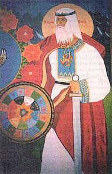
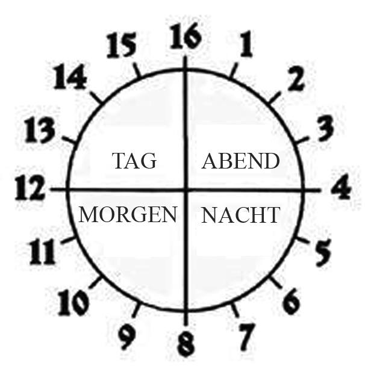
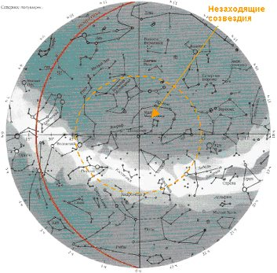
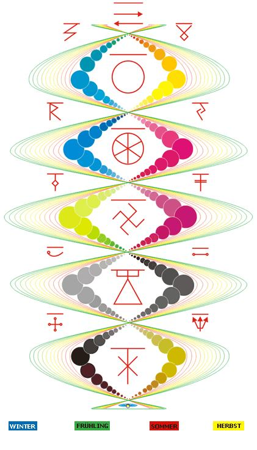
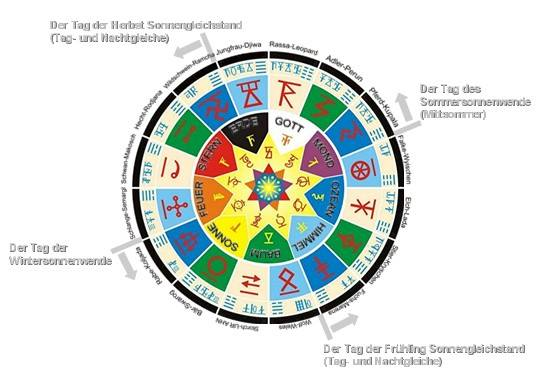

Da'Arischen Jahreskreis von Tschislobog (Gott der Zeit)
„Kaljada Dar“ unddie wedische Astrologie

Unsere Zeitrechnung ist weder mit der Sonne, noch mit den Erden, oder Monden und Sternen verbunden, es ist mit den Gesetzen des Einheitlichen Schöpfers verbunden.
Weil die Sonnen, die Sterne, die Erde und die Monde beschleunigen oder verzögern ihren Lauf, aber die Gesetze des Einheitlichen Schöpfers sind UNERSCHÜTTERLICH und ihre Einhaltung wird von dem Tschislobog (Gott der Zeit) überwacht,
denn er ist der Hüter der Flüsse der Zeit.
Uns wird gesagt, dass das Wort der Kalender von lateinisch "calendarium" abstammt, dass in der Übersetzung vom Lateinischen buchstäblich das Folgende bedeutet: "die Aufzeichnung der Darlehen", "das Schuldbuch". Es handelt sich um die Schuldner, die ihre Schulden oder die Prozente in den ersten Tagen des Monats, d.h. die „Kalend“ Tage (lat. "calendae" oder "kalendae", ist der Titel des ersten Tages des Monats) in Altertümlichem Rom bezahlten. Und bei den Griechen gab es kein „Kalend“. Deshalb sagten die Römer ironisch über die Nichtzahler, dass sie die Schuld in griechischen „Kalend“ Tagen zurückgeben werden, das heißt nicht bekannt wann … irgendwann. Dieser Ausdruck wurde in vielen Sprachen der Erde übernommen.
Der Titel des slawisch-arischen Kalenders "Kaljada Dar", was buchstäblich das Geschenk der Koljada bedeutet, d.h. das Wort "Kalender" wird nicht von dem "Schuldbuch" der Römer abgeleitet, sonder vom einfließen der Kaljada Dar'. Ein anderer Titel des Kalenders — Jahreskreis von Tschislobog (Gott der Zeit).
Heutzutage benutzen das alte Da'Arischen Jahreskreis von Tschislobog (Gott der Zeit) nur die Orthodoxen Slawen (nicht mit den Christen verwechseln) die Altgläubigen Inglingi und der irische Druiden Orden. Das Da'Arischen Jahreskreis geht mit seinen Wurzeln in die Zeiten, als unsere Vorfahren und Ahnen auf dem nördlichen Festland lebten. Sie nannten ihn Daaria (Hyperborea, Arktida, Arktogea). Der Kalender hat die Runen als Zeichenformen d.h. die Monate (je 40 Tage), die Zahlen, die Tage, die Wochen und die Namen der Jahre wurden mit den Runen ausgeschrieben (die Geheimbildnisse (Symbole) für die Übertragung des großen Umfanges der Informationen). Der erste Monat wurde mit einer Rune dargestellt und übrige wurden in der Vereinigung zwei Runen dargestellt. Wobei die zweite Rune zeigte den Zyklus der Umlaufbahnen unserer Erde um unsere Jarilo-Sonne an. Dieser Zyklus heißt „Leto“ (zur deutsch „Sommer“) und beschreibt ein strukturellen Abschnitt der Zeit oder das Zeitraums im Da'Arischen Jahreskreis von Tschislobog ((Gott der Zeit) von 1. bis das 144. Jahr).
Der Kalender ist auf altem 16-wertigen Zahlensystem aufgebaut. Die 16 Sommer (Jahre) bilden das Jahreskreis, der durch 9 Elemente geht und den Kreis des Lebens mit 144 Sommer bildet, d.h. er stützt sich auf das Modell des Universums, auf die axiale Zentralisierung (Erdachse) und die galaktische Orientierung der Erde.
Wir haben den Sommer 7520 seit der Erschaffung der Welt im Sternentempel... Aber es bedeutet nicht ganz, dass unsere Welt vor 7520 Jahre geschaffen worden war... Als Erschaffung der Welt in den alten Zeiten nannten man jenen Zeitpunk, wo ein Abschluss des Friedensvertrags zwischen den kämpfenden Völkern stattfand. So ist auch das "neue System des Abzählens" erschienen. Dieser Friedensvertrag zwischen der Großen Rasse (alte russo-arische Stämme) und dem Großen Drachen (alte Chinesenstämme) war am Tag der Herbstlichen Tagundnachtgleiche oder am 1 Tag des Ersten Monats des Sommers 5500 von der Großen Eiszeit (deutlicher Temperaturrückgang) geschlossen worden. Der Sieg war auf der Seite der Große Rasse, was auch in den Heiligenbildern dargestellt war - der Weiße Recke (Reiter) auf dem Pferd trifft mit seinem Speer den Drachen. (Heut zu Tage ist es Erzengel Michael, der den alten Drachen besiegt... Obwohl dieser Michael in keiner Beziehung zu den alten Ereignissen steht... (Es ist die Tatsache, dass die Christen die alten Fakten (Ereignisse) für ihre Ziele genutzt haben.).
Die kurze Liste der von den Altgläubigen Slawen verwendeten Kalenderformen:
Die Zeitrechnung ensprich ab dem Jahre 2011 zurück:
7520 Sommer der Erschaffung der Welt im Sterntempel (Abschluss des Friedensvertrages zwischen der Großen Rasse (alte Slawenstämme) und dem Großen Drachen (alte Chinesenstämme) (5 508 v. d. Zw.)
13020 Sommer der Großen Eiszeit (deutlicher Temperaturrückgang der durch die Katastrophe auf Midgard-Erde ausgelösten war als der Mond Fatta zerstört wurde und seine Scherben in den Pazifischen Ozean fielen. Fatta umkreiste die Midgard-Erde) (11 008 v. d. Zw.)
40016 Sommer der 3. Ankunft der Wajtman von Gott Perun (38 004 v. d. Zw.)
44556 Sommer der Erschaffung des Großen Regan (Rad o. Götterrad) der Rassenii (Die Vereinigung der slawisch-arischen Völker für den gemeinsamen Aufenthalt. d.h., es waren mehrere Etappen der Besiedlung der Midgard. In der ersten Etappe wurde Daaria besiedelt.) (42 544 v. d. Zw.)
106790 Sommer der Gründung von Asgard Irij (9 Monat) (104 778 v. d. Zw.)
111818 Sommer der Großen Übersiedlung aus Daaria (109 806 v. d. Zw.)
143002 Sommer der Periode Drei Monde (Es ist die Periode, als sich um die Midgard-Erde noch drei Monde (Luna) drehten: Lelja, Fatta und der Mond Monat)(140990 v. d. Zw.)
153378 Sommer der Assa Dei (Krieg der Götter, Zerstörung von Erde Deja, heute Asteroidengürtel zwischen Mars und Jupiter (151 336 v. d. Zw.)
165042 Sommer der Zeit der Göttin Tara (Die Herstellung der Verbindung durch die Himmlische Tara - Polar Stern mit der Göttin Tara. Nach einigen Quellen - die Zeit des Besuches von der Göttin Tara auf unserer Erde.) (163 030 v. d. Zw.)
185778 Sommer der Zeit der Tula (Auf die Erde kamen die Rassenen an (braune Augen). Sie haben den Teil der Norderden Daria besiedelt) (183 766 v. d. Zw.)
211698 Sommer der Zeit der Swaga (Die Ankunft der Swjatorussen (blau Augen) aus dem Sternhaus des Schwanes (der Großen Bärin) und der Besiedlung der Provinz Swaga in Daaria) (209 686 v. d. Zw.)
273906 Sommer der Zeit H’Аrrа (Die Ankunft der H`Arier (grüne Augen) aus dem Sternhaus Finist (Falke) oder - das Sternbild Orion) (271 894 v. d. Zw.)
460530 Sommer der Zeit Dara (Die Ankunft der Da`Arier aus Wajtmara (dem himmlischen Wagen) auf Midgard, aus Sternsystem Simun – der Himmlischen Kuh (der Kleinen Bärin)) (458 518 v. d. Zw.)
604386 Sommer der Zeit Drei Sonnen (dem Anfang der Da`arieschen Zeitrechnung) (602 374 v. d. Zw.)
957520 Sommer der Zeit von der Zeit des Erscheinens der Götter (955 508 v. d. Zw.)
1,5 Milliarden der Sommer der Ankunft auf Midgard der ersten Wajtmara der Großen Rasse, des himmlischen Geschlechtes (Stammes).
Der Da'arische Kalender ist eine bedingte Abbildung der Ausstrahlung des galaktischen Netzes der drei Räume, die sich periodisch ändern in Folge der Erdbewegung.
Alles was war, war für den Menschen – der Menschen des Lichts und den Kosmos aufgebaut, dass ist das Hauptprinzip des slawisch-arischen Kalenders.
Die gewöhnlichen Tage begannen bei den Slawen und Ariern um 18 Uhr abends, waren in sechszehn Teile aufgeteilt und gingen bis zur 18 Stunde des nächsten Tages zu Ende. (Abb.1)

Abb. 1
Die Woche bestand aus 9 Tagen (s. w. die Anzahl der Chakren beim Menschen), der Monat bestand aus 40-41 Tagen und im Jahr waren es 9 Monate, d.h. ebenso nach der Zahl der Chakren.
Weiter ging der Kreis der Jahre, der die Abstände von 16 Jahren einschloss und jedes sechszehnte Jahr war heilig.
Warum besteht der Jahreskreis bei den Slawen und Ariern, wie auch die arischen Tage aus 16 Stunden, aus 16 Jahren?
Gewohnheitsmäßig bestehen die Tage aus 24 Stunden, was eine Reflexion des sichtbaren Umlaufs der Sonne in den Tierkreissternbildern ist und es ist eine verkürzte Zahl.
Die Arier lebten und leben auf der Nordhalbkugel der Erde, wo auf dem Himmel 16 Hauptsternbilder – 4 große Sternbilder sind. Sie sind auf dem Himmel am Tag und in der Nacht ständig zu sehen. In den Nordbreiten gehen die Große und Kleine Bärin, Kassiopeia und Zefej nicht hinter den Horizont. Und 12 Sternbilder sind in der Ebene der Ekliptik gelegen und erscheinen wegen des Horizontes nur periodisch. Diese Nordsternbilder strahlen und gießen das Licht ihres Spektrums aus. Also wie können wir das Licht der nicht untergehenden Sternbilder nicht berücksichtigen?!? So etwas führt zum Unsinn … (Abb.2)

Abb. 2
Und bei den Ariern sind gerade diese nicht untergehenden Nordsternbilder die wesentlichen, sie üben ständigen Einfluss auf den Menschen aus, diese sind auch heilig und die anderen Tierkreiszeichen sind nebensächlich. Die Sternkarte des Nordhimmels wird von alten slawisch-arischen Quellen Folgendenmaßen beschreiben:
«… die runischen Chroniken … berichten, dass sich unsere Jarilo-Sonne in der galaktischen Struktur des Sternsystems Swati steht. (es gibt keine Analogie in den modernen Sternbildern), es wird auch Perun Weg genannt oder himmlische Irii (Paradies). Swati hat die Form von einer linksseitigen Swastika. Im unteren Teil einer dieser swastischen Ärmel von Swati befindet sich unsere Jarilo-Sonne. Sie wird als Dreileuchtende bezeichnet, da sie die drei Welten beleuchtet: die Jawi Welt (Welt der Wirklichkeit), die Nawi Welt (Welt der Geister und andere Wesenheiten) und die Prawi Welt ((Welt der Götter), das Spektrum der Ausstrahlung der Sterne von drei Räumen).Die Jarilo-Sonne bildet das Sternbild der Göttin Simun (die Himmlische Kuh oder die moderne Bezeichnung, die Kleine Bärin) und ist der achte Stern.
Genau so, befindet sich im spastischen Ärmel der Galaxis das Sonnensystem Gott der Gabe - Sonne (mod. Titel: Beta - Löwe). Dieser wird als Jaromächtige Goldene Sonne bezeichnet, er ist heller in der Ausstrahlung des Lichts, größer in dem Umfang und der Masse als die Jarilo-Sonne. Um die Goldene Sonne dreht sich die Ingard-Erde und die Periode der Umlaufbahn beträgt 576 Tage. Die Ingard-Erde hat zwei Monde: Der große Mond mit der Umlaufperiode von 36 Tagen und der kleine Mond mit einem Zyklus von 9 Tagen. Das System der Goldenen Sonne befindet sich im Sternhaus (Sternzeichen) der Rasse im Swarogkreis. Im System der Goldenen Sonne, auf der Ingard-Erde existiert das biologisches Leben, die dem Leben auf der Midgard-Erde ähnlich ist. Diese Erde ist eine Urheimat vieler slawischen und Arischen Stämmen …»
«… In der Mitte der Swarga (des Himmels) ist das Sternhaus des Feuers – Die Schmiede von Swarog, der Ursprung vom Sein, vom alles was ist. Dies ist die Spitze des Weltenbaums, die Stelle der Berührung unserer Welt mit der Höheren Welt in der das wahre Sein des höchsten UR AHN ist. Als Träger der Goi Stämme – der Allweltenplan – das Welt-Ei unseres Universums und Erzeugung der Kreisbewegung der Swarga. Diese Träger – der Stern des Nordens, der heutzutage als Polarstern bezeichnet wird. Im Polarstern sind die Sternbildnisse von Swarog und Lada in der menschlichen Gestalt, diese Sternbilder werden heutzutage Kepheus (Cepheus) und Kassiopeia genannt. Swarog und Lada im Posolon (Übergang) gehen zum Baum der Welten, der von seinem Wächter – Weles im in der Gestalt der Feurigen Schlange (das Sternbild des Drachen) umschlungen ist. Nebenan ist das Sternbild als eine als Bärin sichtbar, das andere als die Kuh und das dritte welche den Hirsch genannt wird. Die Iriji Wächter sind Weles und der Gabegott (Gott der Gabe).»
Die volle Wellenlage des Lichtes der Nordhalbkugel soll nicht 12 Tierkreissternbilder berücksichtigen, wie bei den Südländern, sondern 16 Sternbilder des Himmels oder "Sternhäuser", wie sie die Aria nannten.
Deshalb ist das System aus 12 Tierkreissternbildern für die Aria unvollständig, fremd und ist nur für die Südvölker bedeutsam.
Auch aus diesem Grund besteht der Kreis des Lebens bei den Arien aus 16 × 9 = 144 Jahre.
Weiter besteht der Swarogkreis (die Tage des Swarogs) aus 180 Kreisen des Lebens – 144 × 180 = 25920 Jahre.
So sind für unsere Völker die ganztägigen, jährlichen, 16-jährigen, 144-jährigen und 25920-jährigen Zyklen bedeutsam. Die Veränderung der Strahlungsfelder des Lichtes der drei Räume beeinflusst unmittelbar die Biologie des Menschen durch die Veränderung der Synthese der Hormone, sein soziales Verhalten, auch die Ereignisse des Lebens und der Gesellschaft. Es ist ein tatsächlich und wissenschaftlich begründetes System der Einwirkung des Lichtes auf die Biologie und das Leben des Menschen und keine "Wahrsagerei".
Entsprechend der slawisch-arischen Astrologie, die zu uns aus den alten Zeiten kam, bewegt sich unsere Erde nicht nur um die Sonne, sondern dreht sich auch um die eigene Achse und die Achse ihrerseits bewegt sich langsam im kreisförmigen Kegel. Dabei beschreibt der Nordpol im Raum eine Ellipse, die die Gründung dieses Kegels ist, und der Südpol ist entsprechend sein Gipfel. Die Achse dieses Kegels ist die senkrechte Ebenen der Erdbahn und der Winkel zwischen der Achse und des bildenden Kegels ist etwa 23°27’ gleich. Diese Bewegung der Achse, der Rotation der Erde nach dem kreisförmigen Kegel heißt Präzision. Und als Folge beträgt die volle Wendung des Sternhimmels (optisch beobachtet von der Erde) 25920 Jahre. Von hier aus kam die Bezeichnung Kreis des Swarogs (Swarogkreis).
Während des Swarogkreises (für den Erdbeobachter) wechselt unsere Sonne im gewöhnlichen jährlichen Zyklus auf dem himmlischen Horizont aus dem Sternbild ins Sternbild (Sternhaus) in der entgegengesetzten Richtung. Der Stand der Sonne auf dem Horizont klärt sich während der Sonnenwenden, d.h. in welchem Sternbild (Sternhaus) sich die Sonne am 22. März (der lateinische, westliche Stil) oder am 22. September (der arische, russische Stil) und welcher Epoche wir uns befinden und leben. Da, im Unterschied zur westlichen und chinesischen Astrologie, die Slawen und Aria auf dem himmlischen Bogen nicht nur 12 sondern 16 Sternbilder haben, dauert die jene Tierkreisepoche entsprechend 1620 Jahre . Das heißt, der Punkt der herbstlichen Sonnenwende der Sonne geht alle 1620 Jahre in ein neues Sternenhaus über.
Der Swarogkreis besteht aus folgenden Sternhäusern:
|
№ |
Sternbild Sternenhaus Epoche |
Der Gott - der Beschützer |
Das Datum der Epoche (bezüglich der Gegenwart) |
|
1 |
Jungfrau |
Dschiwa |
10948-9328 vor unserer Zeit |
|
2 |
Rassa |
Tarch |
9328-7708 vor unserer Zeit |
|
3 |
Adler |
Perun |
7708-6088 vor unserer Zeit |
|
4 |
Pferd |
Kupala |
6088-4468 vor unserer Zeit |
|
5 |
Finist - Falke |
Wyschen ( Vishnu) |
4468-2848 vor unserer Zeit |
|
6 |
Elch |
Lada |
2848-1228 vor unserer Zeit |
|
7 |
Taurus - Stier |
Kryschen (Krishna) |
1228-392 vor unserer Zeit |
|
8 |
Fuchs |
Marena |
392-2012 vor unserer Zeit |
|
9 |
Wolf |
Weles (Veles) |
2012-3632 unserer Zeit |
|
10 |
Busl - Storch |
UR AHN - ROD |
3632-5252 nach unserer Zeit |
|
11 |
Bär |
Swarog |
5252-6872 nach unserer Zeit |
|
12 |
Rabe |
Koljada, Waruna |
6872-8492 nach unserer Zeit |
|
13 |
Schlange |
Semargl |
8492-10112 nach unserer Zeit |
|
14 |
Schwan |
Makosch |
10112-11732 nach unserer Zeit |
|
15 |
Hecht |
Rodschana |
11732-13352 nach unserer Zeit |
|
16 |
Wildschwein |
Ramchat |
13352-14972 nach unserer Zeit |
Es ist der fast der vollste Zyklus des himmlischen Netzes der Galaktischen Ausstrahlungen.
Leider sind nicht alle alte Bezeichnungen wieder hergestellt um sie mit den modernen Titeln der Sternbilder eindeutig identifizieren zu können.
Als Beispiel um das System zu erklären, betrachten wir die folgende Zeichnung.
Auf der Zeichnung (Abb. 3) werden die Fragmente der Chakrastrukturen des Menschen mit den Runen und die Wellenstrahlung und Speisung dargestellt. Da’Arischem Jahreskreises deutet auf die Spektren der Wellenfelder der natürliche Ausstrahlung der drei Räume – des galaktischen Netzes des Lichtes.
Man muss verstehen, dass die Verbindung der Natur mit dem Menschen ist einer wesentlicher Wedischer Prinzip. Die künstlichen Felder (Elektrogeräte, die die Sonne, die reine Luft, das reine Wasser und die Bewegung in der Natur ersetzen) mit ihren Wellen und Strahlen sind für den harmonischen, ganzheitlichen Menschen im Prinzip inakzeptabel. Nur auf der Erde, in ihrer Natur und den natürlichen kosmischen Feldern der Ausstrahlungen, können wir die Kraft des ganzen Universums schöpfen. Weil von den Höchsten Kräften einzig und allein die mögliche Lösung verwendet wird – auf die Erde und auf die Menschen die Strahlung der entsprechenden Sektoren des Sternhimmels zu projizieren.

Abb. 3
Schauen Sie selbst es an, rechnen Sie es aus – es sind ALLE 16 bedeutsame ausstrahlenden Sektoren, Räume mit den ihren Spektren!
Auf dem Bild sind die speziell vorübergehenden Zonen in ihrer Wirkungen und Strahlungen dargestellt und in der Farbe – die Jahreszeiten. Achten sie auf die Kombination der Felder (warm – kalt), hier wird die spektrale Regulierung der Wellenfelder durchgeführt.
Wenn die Jarilo-Sonne ein bestimmtes Sternhaus (Sternzeichen) durch geht, vereinigt sie sich mit ihrem Licht und mit dem Licht des Sternzeichens. Die Jarilo-Sonne übt den Einfluss auf die Schicksale und die Charaktere der Menschen, gibt die Kraft, die von auf der Midgard-Erde wachsende Heiligen Bäume wahrnehmen.
Die Lage der Sonne auf dem Horizont wird während der Sonnenwenden bestimmt, d.h. in welchem Sternbild (Sternzeichen) sich die Sonne am 22. März (der lateinische, westliche Stil) oder am 22. September (der arische, russische Stil) – in dieser Epoche leben wir. Da, im Unterschied zur westlichen und chinesischen Astrologie, ist bei den slawisch-arieschen Astrologie auf dem himmlischen Bogen sind nicht 12 sonder 16 Tierkreissternbilder (Sternzeichen) und so mit dauert die entsprechende Sternzeichenepoche nicht 2160, sonder 1620 Jahre. Das heißt, der Punkt der herbstlichen Sonnenstandes (Sonnenwende) der Sonne geht jede 1620 ins neue Sternzeichen über: (Abb. 4)

Abb. 4
Auf der Darstellung Swarog Kreises (Tschislobog - Gott der Zeit) im dem äußerlichen Kreis sind die Beschützer der Sternhauses sichtbar. In dem zweiten Kreis vom äußeren Rand, sind die Stunden der Zeit aufgezeichnet: der Ganztägige Kreis in den 16 Stunden mit 4 Stunden für jeden Zeitabschnitt des Tages: 4 Stunden für den Abend, 4 Stunden für die Nacht, 4 Stunden für den Morgen und 4 Stunden für den Tag. Jede Stunde hat eigene graphische Darstellung und die runiesche Schreibung.
In weiterem Kreis sind 16 Runen des himmlischen Sternhauses (Sternzeichens) dargestellt und die graphische Aufzeichnung hat eine bestimmte Verbindung mit der Anordnung der Sterne und den Elementen auf dem Himmelsgewölbe. Deshalb wurden diese Runen sehr oft für die Verziehung der Kleidung verwendet. Aber diese Runen wurden nicht nur an der Kleidung der Menschen, sondern auch auf den Viehstalungen, dem Geschirr und auf anderem häuslichen Geräten dargestellt.
Der weitere Kreis wir der Kreis der Elemente genannt, dort sind 9 Elemente, die durch die Zeit des Lebens gehen. Jedem Element ist ein Name und die Rune nach der Einordnung gegeben: 1. Die Erde, 2. Der Stern, 3. Das Feuer, 4. Die Sonne, 5. Der Baum, 6. Der Himmel, 7. Der Ozean, 8. Der Mond, 9. Der Gott.
Jeder Sommer (Jahr) ist mit dem Kreis der Elemente verbunden und deshalb kann man an hand Charakteristiken von Elementen das Wesen von diesem oder jenem Jahr erwarten.
Der darauf folgender Ring ist der Wochenkreis. Nach ihm wurde nicht nur die laufende Nummer des Wochentages bestimmt, sondern auch wer aus den Göttern den gegebenen Tag begönnt und welcher die neun Erden des Jarilo-Sonne Systems uns die Kraft gibt. Im Zentrum, des Kreises – ist die strukturelle Bezeichnung des Menschen. Die 9 Punkte zeichnen die 9 energetischen Hauptzentren (Chakren) des Menschen auf, durch die er die verschiedene Ströme der Kraft der Lebenskraft bekommt. Es sind auch 9 Arten des Bewusstseins der Menschen, die 9 verschiedene Gefühle, die dem Menschen gegeben sind und einige andere Eigenschaften.